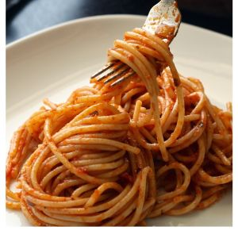

Como preparar spaguetis

Descripcíon
La pasta con tomate es un plato socorrido cuando no tenemos tiempo o vamos a cocinar para varias personas. ¿Pero por qué nunca te sale tan rica como la preparan en los restaurantes? Toma nota
Se presupone de un italiano que sabe cocinar al dente y con un resultado medianamente bueno un plato de pasta. Claro que este pensamiento sería el equivalente a pensar que todo español sabe preparar una paella o una tortilla de patatas. Y, claramente, no es así.
Lo cierto es que para cocinar bien, como mínimo, hay que tener cierto interés y dedicarle un tiempo. Así lo han hecho aficionados a la cocina como los creadores del blog culinario Gnambox Riccardo Casiraghi y Stefano Paleari, quienes se han hecho conocidos por promover la simplicidad de la cocina y enseñar a los usuarios a preparar recetas italianas tradicionales de la forma más sencilla.
Ingredientes
- Un poco de aceite
- 1 Cebolla cabezona
- 800 Gramos de tomates naturales
Pasos
- Seguramente o tú o algún conocido es de los que primero prepara la pasta y, una vez retirada de la olla, aprovecha el mismo recipiente para preparar la salsa. Es una opción, pero los profesionales culinarios suelen preparar los sofritos y salsas en sartenes, y el resultado es diferente.
- Tal y como la explican Casiraghi y Paleari la salsa para unos espaguetis con tomate es bien sencilla: necesitarás un poco de aceite, una cebolla y unos 800 gramos de tomates naturales. Sofríe la cebolla hasta que esté dorada y después añade los tomates previamente picaditos y sal.
- Y ahora, la pasta
- Necesitamos una olla grande en la que echaremos agua –por lo menos 1 litro por cada 100 gramos de pasta– y sal –la cantidad ideal es de 10 gramos por litro–. “Recuerda que la pasta se debe añadir sólo cuando el agua está hirviendo. Hacerlo antes es un error muy común”, explican los autores en Yahoo Italia.
- Un pequeño truco para que entren todos los espaguetis en la olla es introducir el taco girándolo levemente –como si lo estrujásemos para que caigan en diagonal– de tal forma que la pasta caiga en la olla haciendo una especie de espiral y los extremos que queden en el exterior se vayan introduciendo en el agua sin que tengas que empujarlos.